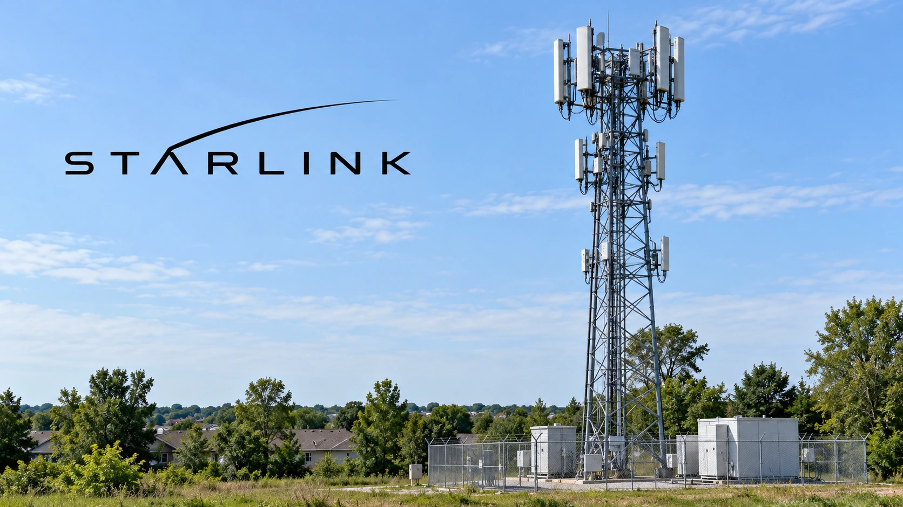

SpaceX seeks 80,000 cell sites in push toward a US wireless network
Reported tower talks would extend Starlink beyond satellites. Spectrum approval, construction and network economics remain major hurdles.

SpaceX is seeking access to at least 80,000 US cellular sites, according to a Bloomberg report Thursday evening, a proposed expansion that would move Starlink closer to competing as a nationwide wireless carrier. The reported negotiations include tower owner Crown Castle. No completed lease agreement or nationwide commercial launch was announced in the report.
The potential competitive shift remained in focus Friday. Investor's Business Daily reported pressure on incumbent carrier shares and gains for tower operators. The distinction reflects different business models: another network could challenge companies selling mobile subscriptions while creating an additional customer for businesses that rent space for antennas. That opportunity depends on contracts, rather than discussions alone.
A satellite business needs a ground strategy
Starlink Mobile's existing proposition connects compatible LTE phones to satellites where users have a view of the sky. The company describes integration with mobile networks as similar to a roaming arrangement. A terrestrial network addresses a different requirement: carrying concentrated traffic where large numbers of people use their phones in the same area, including places where satellite visibility is limited.
Owning satellites does not eliminate the practical tasks involved in a ground network. A cellular site needs power, antenna equipment and a connection into the wider communications system. Buildings and local conditions influence coverage. Access to a tower is therefore one input into service, rather than a complete working network or proof that customers can immediately switch providers.
For investors, that separates an impressive footprint target from the spending needed to make it productive. Leases would create continuing obligations before a new carrier necessarily has enough customers to cover them. Network equipment, integration and support would add costs beyond site access. Our explanation of capital expenditure and free cash flow sets out why a growth project can strengthen long-term capacity while consuming cash upfront.
The spectrum agreement is real; its approval is pending
A separate, confirmed step came October 8, when Grain Management announced an agreement for SpaceX to acquire its nationwide 800 MHz spectrum portfolio. Grain said the transaction remained subject to Federal Communications Commission approval and customary closing conditions. Its announcement described the frequencies as supporting Starlink Mobile connections from both the ground and space.
Spectrum supplies the permission to transmit using particular frequencies; site access supplies locations from which ground equipment could transmit. Securing one does not automatically secure the other. Combining them could support a wider service, but regulatory conditions, installation schedules and device compatibility would still influence what can be sold and when. The reported tower talks add a possible infrastructure component to the earlier spectrum transaction.
SpaceX's product page also describes a next-generation satellite system intended to improve throughput and deliver a cellular experience comparable to terrestrial service in most environments. Those are the company's stated capabilities and ambitions. They should not be read as independently measured performance for a completed nationwide hybrid network. Announced capacity and operating results answer different questions, much as network-equipment orders differ from recognized revenue.
What tower owners can actually book
Crown Castle said in its October 21 results that it operates approximately 40,000 US cell towers. Its current annual outlook projects $3.875 billion in site rental revenue at the midpoint. Those existing operations provide scale for a prospective tenant, but the 80,000-site figure describes SpaceX's broader reported ambition, not a completed contract with Crown Castle.
Reuters reported that Crown Castle chief executive Christian Hillabrant had discussed engagement with potential customers without identifying specific counterparties. That leaves material terms unresolved publicly, including the number of sites involved, lease duration, installation timing and rental economics. A large potential customer can improve an infrastructure owner's prospects, but its financial value depends on those details.
For consumers, the meaningful milestone would be a service offering with defined coverage, device support and pricing. For investors, it would be signed commitments and a credible construction budget. The reported negotiations make the competitive possibility more concrete; they do not yet establish the timetable or economics of a fourth nationwide carrier.
Sources and methodology
Sources checked October 23, 2026. Reported findings and company or regulatory statements are attributed in the text; discussion of financial implications is editorial analysis. The generated cover is illustrative.